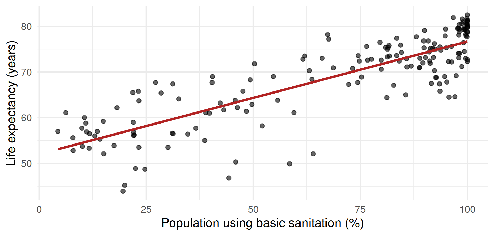
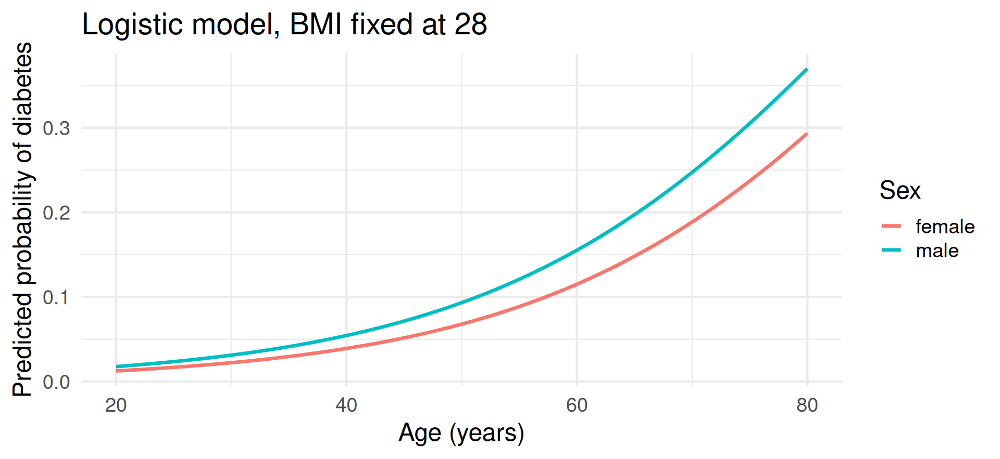
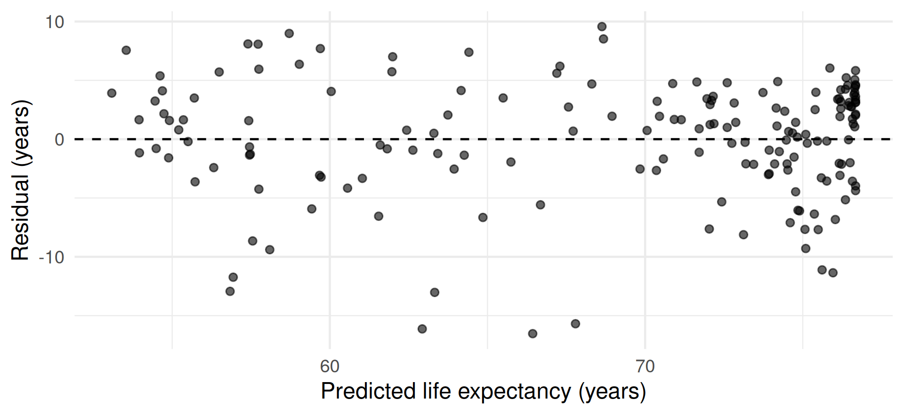

library(NHANES)
adults <- NHANES |>
distinct(ID, .keep_all = TRUE) |> # some people appear twice: keep one row each
filter(Age >= 20)
nrow(adults)[1] 4654GPH-GU 2182: Statistical Programming in R · Fall 2026
New York University · School of Global Public Health
2026-11-18
t.test(), prop.test(), chisq.test().lm(), coefficients, R-squared.glm(), odds ratios, 95% CIs.broom and publication tables.group_by() + summarize() describe differences between groups.Warning
A p-value is not the size of an effect. Always report the estimate and its CI too.
[1] 4654NHANES: a teaching sample from the US National Health and Nutrition Examination Survey, 2009–2012.t.test()
Welch Two Sample t-test
data: BPSysAve by Sex
t = -7.8221, df = 4424.5, p-value = 6.452e-15
alternative hypothesis: true difference in means between group female and group male is not equal to 0
95 percent confidence interval:
-5.097076 -3.054089
sample estimates:
mean in group female mean in group male
119.2834 123.3590 mean in group female mean in group male
119.2834 123.3590 [1] -5.097076 -3.054089
attr(,"conf.level")
[1] 0.95[1] 6.452177e-15$.Have women and men ever smoked (100+ cigarettes in their life) at the same rate?
prop.test()
2-sample test for equality of proportions with continuity correction
data: smoking$smokers out of smoking$n
X-squared = 98.431, df = 1, p-value < 2.2e-16
alternative hypothesis: two.sided
95 percent confidence interval:
-0.1736338 -0.1162338
sample estimates:
prop 1 prop 2
0.3714524 0.5163862 x = number with the outcome, n = group size, one entry per group.chisq.test()Is diabetes associated with education level?
| Question | Outcome | Groups | Test |
|---|---|---|---|
| Do average BP values differ? | numeric | 2 | t.test(y ~ group, data = ...) |
| Do two rates differ? | yes/no | 2 | prop.test(x = ..., n = ...) |
| Are two categories related? | categorical | 2 or more | chisq.test(table(a, b)) |
$p.value always; $estimate and $conf.int for t.test() and prop.test().TotChol) between physically active and inactive adults (PhysActive) with t.test().Sex, then compare the two shares with prop.test().Smoke100) related to BMI category (BMI_WHO)? Use table() and chisq.test().outcome ~ group.lm()[1] 174life_expectancy: years a newborn would live at current death rates.sanitation: percent of people using at least basic sanitation services.
lm()
Call:
lm(formula = life_expectancy ~ sanitation, data = gm04)
Coefficients:
(Intercept) sanitation
52.0010 0.2467 ~ predictor, then data =.(Intercept) sanitation
52.0010191 0.2467213 sanitation
2.467213 summary()
Call:
lm(formula = life_expectancy ~ sanitation, data = gm04)
Residuals:
Min 1Q Median 3Q Max
-16.5342 -2.5415 0.8388 3.4435 9.5700
Coefficients:
Estimate Std. Error t value Pr(>|t|)
(Intercept) 52.00102 0.91901 56.58 <2e-16
sanitation 0.24672 0.01217 20.27 <2e-16
Residual standard error: 5.018 on 172 degrees of freedom
Multiple R-squared: 0.705, Adjusted R-squared: 0.7032
F-statistic: 411 on 1 and 172 DF, p-value: < 2.2e-16 (Intercept) sanitation continentAmericas continentAsia
52.2147201 0.1827834 6.9712386 4.8945128
continentEurope continentOceania
6.7262907 3.3266092 continent is text, so R creates one coefficient per continent except the first alphabetically: Africa is the reference level.continentEurope: difference from Africa at the same sanitation level. (Intercept) sanitation continentAfrica continentAmericas
58.9410108 0.1827834 -6.7262907 0.2449479
continentAsia continentOceania
-1.8317779 -3.3996816 fct_relevel() (forcats, new today; it joins fct_reorder() and fct_lump() from Week 7) moves a level to the front: it becomes the reference.(Intercept) Age Sexmale
98.2217221 0.4381471 4.5607888 lm() drops rows with a missing value in any model variable.lm(life_expectancy ~ GDP_per_capita, data = gm04). Interpret the slope (GDP_per_capita is in $1,000 per person).geom_smooth(method = "lm"). Does a straight line fit well?BPSysAve ~ Age + Sex + BMI in adults. Interpret the BMI coefficient, then make "male" the reference level with fct_relevel() and refit.glm()Yes/No), smoking, vaccination: the outcome is a probability.glm()(Intercept) Age BMI Sexmale
-8.02266444 0.05806330 0.08924975 0.34619255 [1] "No" "Yes"family = binomial makes it a logistic regression."Yes". 2.5 % 97.5 %
(Intercept) 0.0001693197 0.000620532
Age 1.0532052652 1.066573014
BMI 1.0790685282 1.108015915
Sexmale 1.1625611285 1.720728553 1 2
0.06437752 0.18017215 type = "response" returns probabilities, not log odds.grid <- tibble(Age = rep(20:80, times = 2), BMI = 28,
Sex = rep(c("female", "male"), each = 61))
grid |>
mutate(prob = predict(fit_diab, newdata = grid, type = "response")) |>
ggplot(aes(Age, prob, color = Sex)) +
geom_line(linewidth = 1.2) +
labs(x = "Age (years)", y = "Predicted probability of diabetes",
title = "Logistic model, BMI fixed at 28")
levels(adults$Smoke100), then fit glm(Smoke100 ~ Age + Sex + Education, family = binomial, data = adults).exp(), and get 95% CIs with exp(confint()).Sexmale and EducationCollege Grad. What is the reference group for each?family = binomial.exp() the estimates and the CI endpoints.type = "response" for probabilities.broom + AI Cornercoef() gives a named vector, confint() a matrix, summary() a printout.filter(), mutate(), and plot.| Function | Returns | One row per |
|---|---|---|
tidy() |
estimates, SEs, p-values, CIs | coefficient |
glance() |
R-squared, number of observations, AIC | model |
augment() |
fitted values and residuals | observation |
tidy(): One Row per Coefficient# A tibble: 3 × 7
term estimate std.error statistic p.value conf.low conf.high
<chr> <dbl> <dbl> <dbl> <dbl> <dbl> <dbl>
1 (Intercept) 98.2 0.726 135. 0 96.8 99.6
2 Age 0.438 0.0135 32.5 1.93e-208 0.412 0.465
3 Sexmale 4.56 0.470 9.71 4.72e- 22 3.64 5.48 estimate, std.error, statistic, p.value, conf.low, conf.high.tidy() for Logistic Models# A tibble: 4 × 7
term estimate std.error statistic p.value conf.low conf.high
<chr> <dbl> <dbl> <dbl> <dbl> <dbl> <dbl>
1 (Intercept) 0.000328 0.331 -24.2 1.27e-129 0.000169 0.000621
2 Age 1.06 0.00322 18.1 7.42e- 73 1.05 1.07
3 BMI 1.09 0.00675 13.2 6.26e- 40 1.08 1.11
4 Sexmale 1.41 0.1000 3.46 5.36e- 4 1.16 1.72 exponentiate = TRUE turns the estimates and the CI endpoints into odds ratios.glance(): One Row per Model# A tibble: 1 × 3
r.squared adj.r.squared nobs
<dbl> <dbl> <int>
1 0.705 0.703 174# A tibble: 2 × 4
model r.squared adj.r.squared nobs
<chr> <dbl> <dbl> <int>
1 sanitation 0.705 0.703 174
2 plus_continent 0.753 0.746 174map_dfr() (Week 9) stacks one row per model: easy side-by-side comparison.augment(): One Row per Observation# A tibble: 174 × 4
life_expectancy sanitation .fitted .resid
<dbl> <dbl> <dbl> <dbl>
1 76.2 92.3 74.8 1.43
2 69.2 97.4 76.0 -6.83
3 75.3 89.9 74.2 1.12
4 73 88.9 73.9 -0.935
5 81.2 100 76.7 4.53
# ℹ 169 more rows.fitted: the model’s prediction. .resid: observed minus predicted.
or_table <- tidy(fit_diab, exponentiate = TRUE, conf.int = TRUE) |>
filter(term != "(Intercept)") |>
mutate(Predictor = case_when(term == "Age" ~ "Age (per year)",
term == "BMI" ~ "BMI (per 1 kg/m2)",
term == "Sexmale" ~ "Male (vs. female)"),
p = ifelse(p.value < 0.001, "< 0.001", format(round(p.value, 3), nsmall = 3))) |>
select(Predictor, OR = estimate, `CI low` = conf.low, `CI high` = conf.high, p)knitr::kable().| Predictor | OR | CI low | CI high | p |
|---|---|---|---|---|
| Age (per year) | 1.06 | 1.05 | 1.07 | < 0.001 |
| BMI (per 1 kg/m2) | 1.09 | 1.08 | 1.11 | < 0.001 |
| Male (vs. female) | 1.41 | 1.16 | 1.72 | < 0.001 |
gt.Asked to “estimate the odds ratio of diabetes for physically active versus inactive adults, adjusting for age,” an AI wrote:
# A tibble: 1 × 4
term estimate conf.low conf.high
<chr> <dbl> <dbl> <dbl>
1 PhysActiveYes -0.388 -0.584 -0.194AI’s write-up: “The odds ratio for physical activity is -0.39, so active adults have 39% lower odds of diabetes.”
The code runs and the sentence sounds right. Ship it?
Audit findings:
tidy() without exponentiate = TRUE reports log odds. An odds ratio can never be negative."No" comes first, so the comparison is active versus inactive.Important
Logistic coefficients are log odds. Exponentiate before you call them odds ratios.
BPSysAve ~ Age + Sex and BPSysAve ~ Age + Sex + BMI; compare them with glance() and map_dfr().augment() your GDP model from Exercise 2 and plot .resid against .fitted. What pattern do you see?tidy() and knitr::kable().tidy(..., exponentiate = TRUE, conf.int = TRUE) for logistic models.stopifnot(), map() and map_*(), sample() and set.seed(), the d/p/q/r functions, Monte Carlo simulation, the Central Limit Theorem).Note
Laptops closed, please. Your in-class worksheet should already be pushed to GitHub before the quiz begins.
gt and interactive tables with DT.Questions? Office hours are listed on the syllabus page, or email anytime.